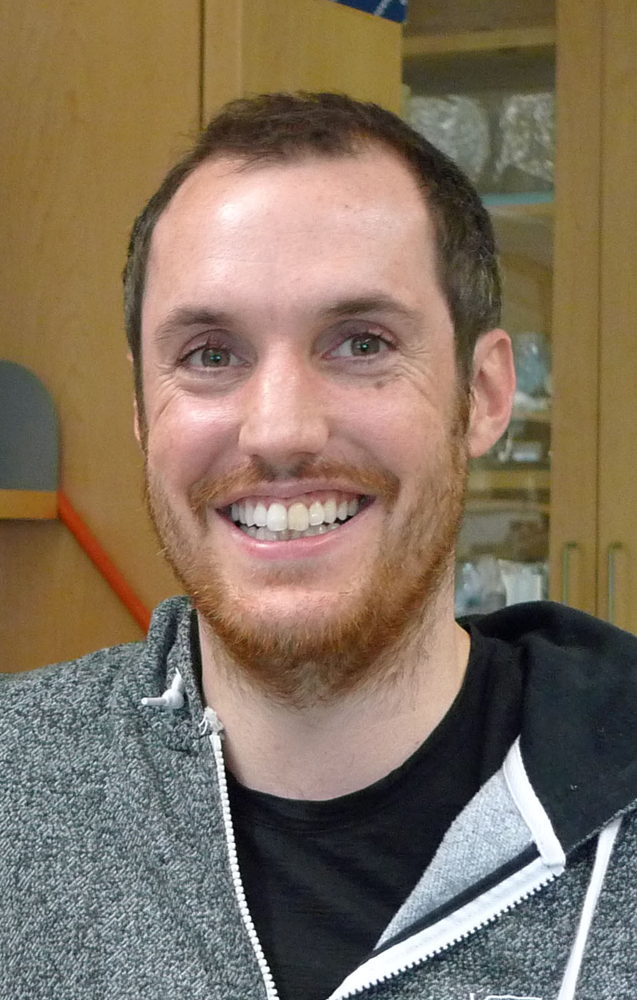

Dr Norman Davey |
|

Norman received his Ph.D. degree (2009) from the Conway Institute of Biomolecular & Biomedical Research at University College Dublin, Dublin, Ireland, working on short, linear motif discovery methods. He subsequently moved to the European Molecular Biology Laboratory (EMBL), Heidelberg, Germany, as an EIPOD postdoctoral fellow to work on various aspects of motif biology including the prominent role of SLiMs in regulatory decision making, splice isoform-specific functionality, and viral pathogenesis. In 2013, he joined the Department of Physiology at the University of California, San Francisco (UCSF) as a postdoctoral fellow with Professor David O. Morgan characterizing novel motifs in the cell cycle. His research focuses on the role of SLiM within intrinsically disordered regions in directing cell regulation. In September 2014, he returned to University College Dublin to start his own group studying motif function. He has authored over 30 papers on various aspects of SLiM biology. He continues to utilize evolutionary, proteomic, and genomic data to examine two major open questions about intrinsically disordered regions: (i) what are the modules that are responsible for their functionality and (ii) how do perturbations in the cell modulate the functionality of these modules. |